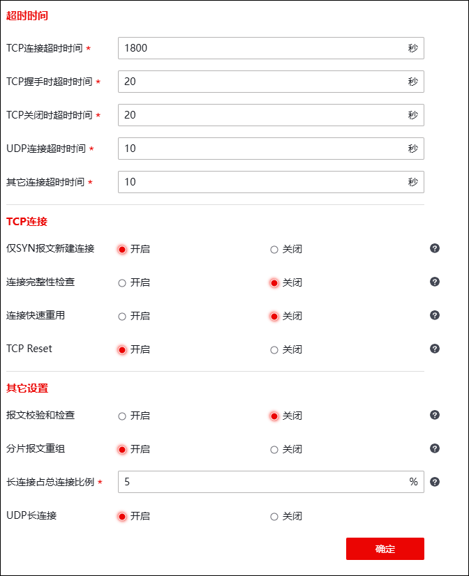

| 步骤1 | 选择 系统管理 > > ，如下图所示。 |

| 步骤2 | 配置网络参数。 |
在设置网络参数时，各项参数的具体说明如下表所示。
参数 |
说明 |
|
|---|---|---|
超时时间 |
TCP连接超时时间 |
设置建立TCP连接后的空闲超时时间。TCP连接建立后，在空闲超时时间内，如果没有相同五元组的TCP连接通过NGFW，NGFW则将该建立的连接删除。 单位：秒；取值范围：0，10-7200；默认值：1800。 |
TCP握手时超时时间 |
设定建立TCP连接的三次握手的超时时间。 单位：秒；取值范围：10-200；默认值：20。 |
|
TCP关闭时超时时间 |
设置关闭TCP连接的超时时间。 单位：秒；取值范围：3-800；默认值：20。 |
|
UDP连接超时时间 |
设置建立UDP连接后的空闲超时时间。UDP连接建立后，在空闲超时时间内，如果没有相同五元组的UDP连接通过NGFW，NGFW则将该建立的连接删除。 单位：秒；取值范围：10-7200；默认值：60。 |
|
其他连接超时 |
设置除TCP、UDP连接外其他类型连接的超时时间。 单位：秒；取值范围：10-7200；默认值：20。 |
|
TCP连接 |
仅SYN报文新建连接 |
对于TCP连接，设置是否开启只有SYN报文才可建立新连接。 |
连接完整性检查 |
是否启用TCP连接完整性状态检测开关。 说明： 1）TCP连接完整性状态检测开关处于开启状态下时，NGFW会跟踪TCP连接的状态，TCP连接必须通过完整的三次握手，NGFW才允许其建立连接；经过四次结束握手或者收到RST数据包，NGFW才终结TCP连接。 2）在特殊情况下，对于一些建立的时候并没有经过NGFW，连接建立以后需要经过NGFW的TCP连接，则需要关闭状态检测开关；否则该类连接会因不符合NGFW的TCP连接完整性标准而被丢弃。 |
|
连接快速重用 |
是否启用快速连接重用开关。 说明： 当源到目的的连接已经存在的情况下，源向目的发送SYN包时开启快速连接重用开关，NGFW会将已建立的连接删除并重新建立连接；反之NGFW直接将该SYN包丢弃。 |
|
TCP Reset |
对于违反安全策略的TCP连接，设定是否允许NGFW发送TCP Reset报文以中断连接。 |
|
其他设置 |
报文校验和检查 |
设置是否对TCP/UDP/ICMP/IP的校验和进行检查。默认不勾选。 |
分片报文重组 |
设置是否对接收到的分片数据报文进行重组。默认勾选。 |
|
长连接占总连接比例 |
设置长连接占总连接百分比的上限。单位：%；取值范围：5-90。 说明： 当长连接占最大并发连接数的百分比超过此处设置的值，NGFW将自动删除存在时间较长的长连接，以避免大量的长连接一直占用内存。 |
|
UDP长连接 |
选择是否允许UDP协议建立长连接。 |
|
| 步骤3 | 系统参数设置完成后，点击【应用】按钮完成系统参数的配置。 |